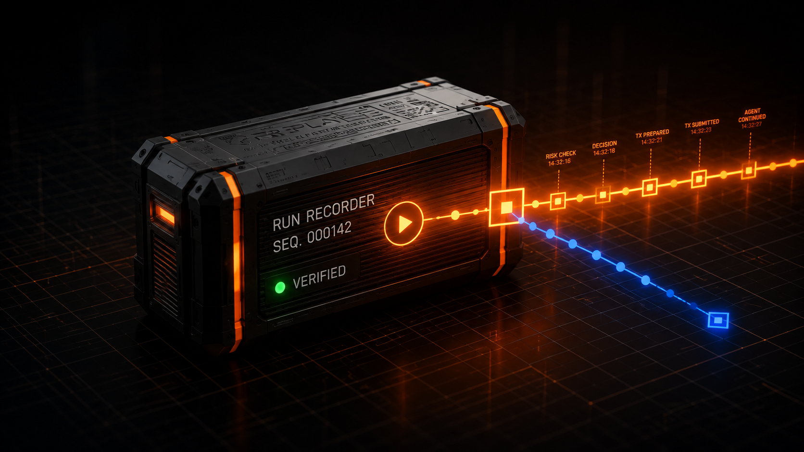

RECORDER: LIVE · CHAIN: MANTLE · PACKET HASH: VERIFIED
REPLAY records every prompt, tool call, decision, and transaction your on-chain AI agent makes — then lets you scrub, verify, and fork the timeline.
01 · The problem
Logs can be incomplete, local, or edited — by the same operator being audited.
You cannot see what the agent knew at the moment it acted.
You cannot test what would have happened without rebuilding the run.
02 · The loop
Every decision becomes an Evidence Packet — hashed and anchored on Mantle as it happens.
Walk the run timeline step by step. Sequence, timestamps, block numbers.
Recompute every hash against its on-chain anchor. Tampering fails closed.
Edit the inputs at any step and re-execute the decision. Diff the outcome.
03 · The artifact
What the agent saw, what it answered, what it called, what it signed — one structured packet per decision, hash-anchored the moment it happens. This one is real: recorded by our MERIDIAN yield agent and anchored on Mantle Sepolia.
| agent | meridian |
| event | decision · risk_check |
| model input | { idle_usdy: 5000, aave_apy: 4.81, reserve: 12% } |
| model output | propose MOVE → aave_usdy_supply |
| packet hash | 1bdc92ad0cb25d8cfdf228a4b5ceb523a00d…e7a61c |
| anchor tx | 0x475a60418e248c9ce524a94439a5526aba…7508bf |
| contract | FlightRecorder · 0x4d46…d062 |
| status | VERIFIED — HASH MATCHES ON-CHAIN ANCHOR |
04 · The proof
Click verify and REPLAY re-fetches the packet, recomputes its SHA-256, and checks it against the Mantle anchor. There are two possible answers.
Packet hash matches the on-chain anchor. This step provably happened, exactly as recorded.
1bdc92ad…e7a61c ≡ 1bdc92ad…e7a61c
The packet no longer matches its anchor. Someone touched the record. Verification fails closed.
8f02c1aa…94d3e0 ≠ 1bdc92ad…e7a61c

05 · The thesis
REPLAY anchors every agent decision on Mantle so history cannot be rewritten by whoever is being investigated.
06 · Time travel
Pick the step where it went wrong. Edit the inputs — the risk floor, the balance, the APY. REPLAY re-executes the decision deterministically and shows you both timelines.
Risk threshold 0.42 → checks passed → funds moved.
Risk threshold 0.55 → check failed → no action taken.
Forks re-execute the agent's decision logic — there is no model call in the replay path, so the same fork gives the same answer every time. Reproducible, not probabilistic.
07 · Instrument
Works with any viem-based agent. Judges can run the full record-and-verify path offline with the in-memory backend — no wallet, no gas.
import { createReplay } from "replay"; const replay = createReplay({ agentId: "meridian", runId, backend }); await replay.record({ eventType: "decision", payload: { input, output, toolCalls, txHash } }); // Recorded. Hashed. Anchored on Mantle.
08 · The close
Datadog tells you what your app did.
LangSmith tells you what your LLM did.
REPLAY tells you what your on-chain agent did — and lets you time-travel back to fix it.